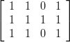
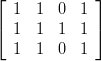
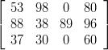
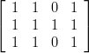
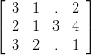

SIJ = I × J\{(13), (33)} 

In this example, we solve a given problem instance without the use of the graphical user interface of LiSA. This is done by coding the problem instance in XML and by the subsequent call of a solution algorithm directly from the command line. This way can be used to automate the solution and optimization of given shop scheduling problems.
Given is a problem instance of the type J∣∣∑ Ci with 4 machines and 3 jobs. In addition, the processing times and job orders are given as follows:
PT =  |
|
For this problem instance, a schedule should be determined by means of the algorithm Beam Search (→4.2.3).
Completion of missing information
For the transfer to a solution algorithm, the set of operations and the machine orders must be given in matrix form. From the matrix of the processing times PT, the set of operations can be determined:
SIJ = I × J\{(13), (33)}
Matrix MO is obtained as follows:
MO = 
Generation of the instance
document
Now the problem instance has to be transformed into an XML document which can be transferred to the solution algorithm. The information on the parameters of the call for the solution algorithm is important which are also contained in the document – combined in a <controls> element. The particular parameters consist of a name, the type (string, integer or real) and a value. In Chapter 4, one can find which parameters are required for a particular algorithm.
Hint: For the correct input of the XML file, the order of the XML elements is important. For instance, the <controls> element must follow directly after the <values> element. The general structure of an instance document is described in Appendix A.
For the data given above, the following instance document created:
Call of an algorithm under Windows
It is assumed that the XML file created is contained under the name example.xml in the directory C:\Scheduling\. The algorithm to be called (in this case beam.exe) is contained in the subdirectory bin of the LiSA directory (standard C:\Program Files\LiSA\bin). By means of the Windows command line (cmd), one has to change into this directory in order to invoke the algorithm from here (the call from another working directory is not possible).
This invocation generates in the directory C:\Scheduling\ the file example.out.xml which is a document of the type solution. It contains the output of the algorithm and the determined schedule.
Call of the algorithm under UNIX and cygwin
Here it is assumed that the created XML file has been stored in the home directory under the name example.xml. The algorithm to be called (in this case beam) is contained in the subdirectory bin of the LiSA directory (standard ~/LiSA/bin). By means of a console, the program can be activated in this working directory (a call from another directory is not possible.).
This invocation generates in the home directory the file example.out.xml which is a document of the type solution. It contains the output of the algorithm and the determined schedule.